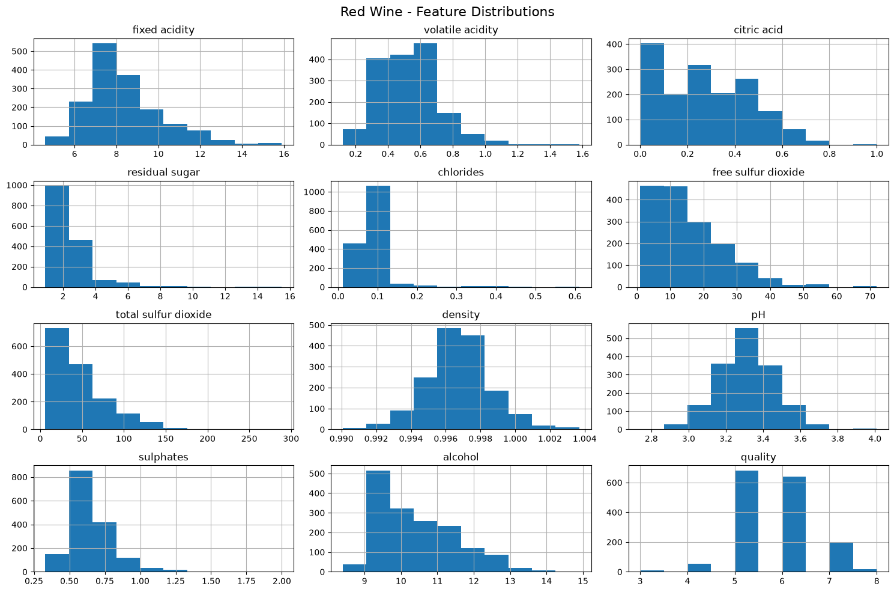
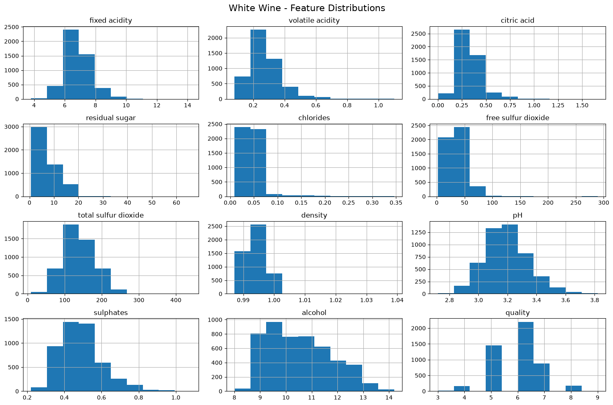
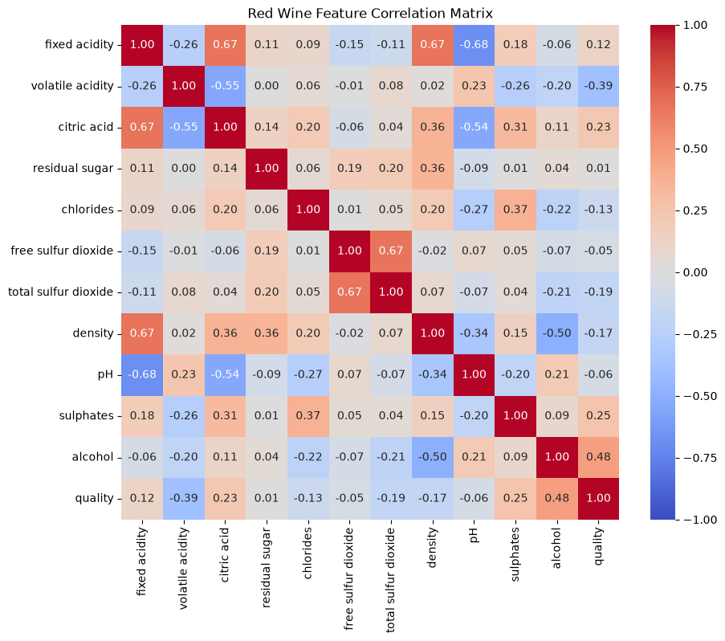
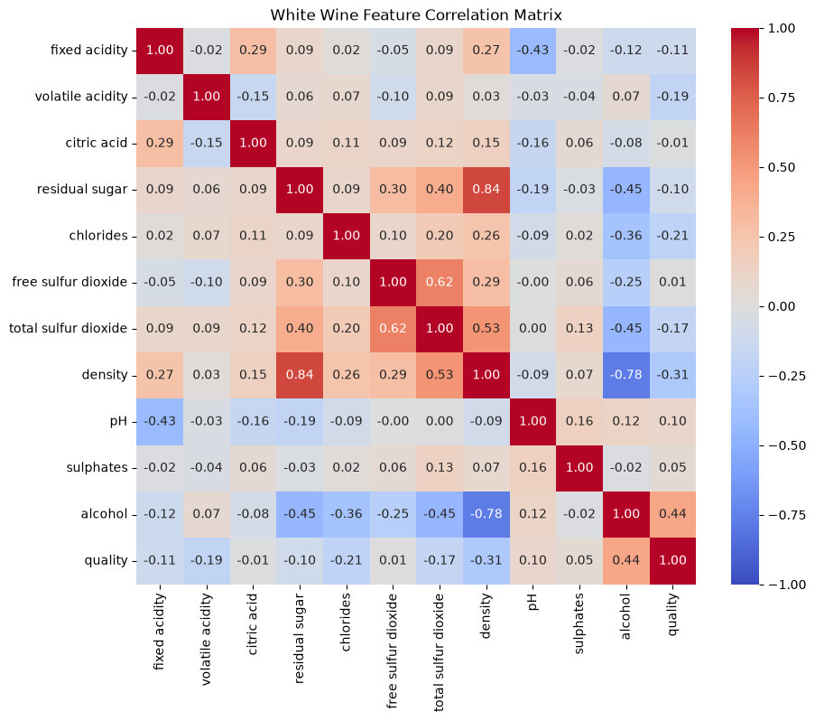
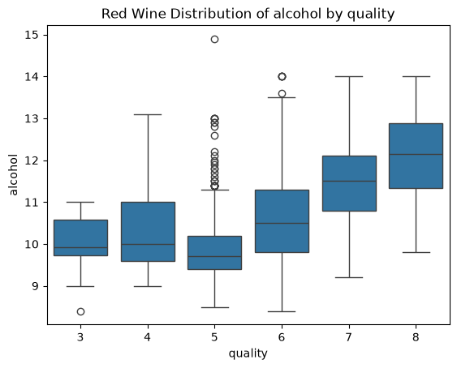
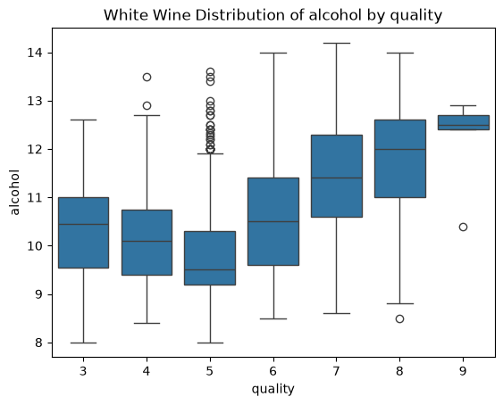
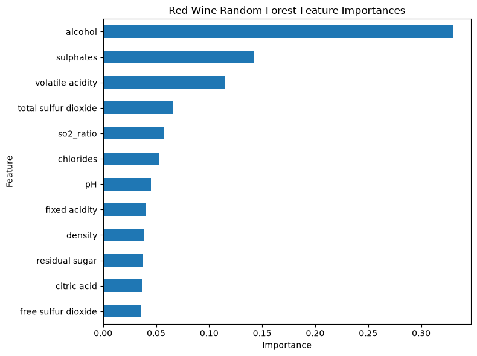
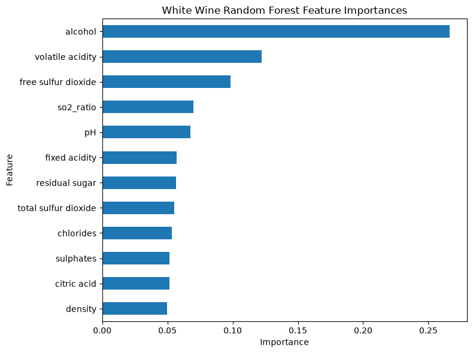

An end-to-end data science project demonstrating data cleaning, exploratory data analysis, machine learning, and model evaluation using Python and Scikit-learn.
GitHub Repository
The goal of this project was to explore the relationship between the
physicochemical properties of wine and its quality rating using
exploratory data analysis and supervised machine learning.
Using separate red and white wine datasets, I performed data
inspection, cleaning, visualization, and feature engineering before
developing and evaluating several regression models. Random Forest
models were selected and optimized through hyperparameter tuning to
predict numerical wine quality scores based on measured chemical
characteristics.
The project also involved developing and deploying an interactive
Streamlit application that allows users to enter wine measurements
and receive a predicted quality score from the corresponding red or
white wine model.
| Datasets | Red and White Wine Quality |
|---|---|
| Data Source | UCI Machine Learning Repository / Kaggle dataset |
| Problem Type | Supervised Regression |
| Target | Quality |
| Algorithms | Linear Regression, Decision Tree, Random Forest, Gradient Boosting |
| Final Model | Random Forest |
| Deployment | Streamlit Community Cloud |
This project uses two wine quality datasets containing
physicochemical measurements of red and white wines. Each
observation represents a wine sample, with laboratory
measurements describing its chemical composition and a quality
rating assigned by human tasters.
The target variable, quality, is an integer rating. The
remaining columns represent measurable properties such as acidity,
residual sugar, chlorides, sulfur dioxide, density, pH,
sulphates, and alcohol.
The red and white wine datasets were analyzed separately to
investigate differences in their chemical characteristics and
develop independent prediction models.
Both datasets were inspected for missing values, duplicate records,
data types, and inconsistencies before modeling.
Duplicate records were identified and evaluated during data
preparation. There were no missing values in either dataset,
and all columns had appropriate data types.
Feature engineering was also performed to create additional
variables, including so2_ratio, calculated by dividing free sulfur
dioxide by total sulfur dioxide.
The final Random Forest models used 12 input features, including
the engineered so2_ratio variable.

Histograms were created for each variable to examine their distributions and identify potential skewness or unusual patterns.
Red wine features generally exhibited more skewed distributions compared to white wine, which had more symmetric distributions for several variables.

White wine features generally exhibited more symmetric distributions compared to red wine, which had more skewed distributions for several variables.

Correlation analysis was used to examine relationships between
physicochemical measurements and wine quality.
For red wine, alcohol showed a positive correlation with quality
(approximately 0.48), while volatile acidity showed a negative
correlation (approximately -0.39). These relationships helped
identify potentially useful predictors for subsequent modeling.

For white wine, alcohol also showed a positive correlation with
quality (approximately 0.44), while density showed a
negative correlation (approximately -0.31).
These findings suggest that red wine and white wine have slightly
different correlation patterns with respect to their physicochemical
properties.

Boxplots were created for each variable to examine their distributions
and identify potential skewness or unusual patterns.
The red wine box plot shows the distribution of alcohol content across
different quality scores. Red wines with quality scores of 3, 4, and 5 have
median alcohol content near 10% ABV. The median increases for wines
rated 6, 7, and 8, reaching approximately 12% ABV for the
highest-quality wines.
The quality score of 5 also contains several observations above the
upper whisker, indicating wines with unusually high alcohol content
compared with others in that quality category.
Overall, the visualization suggests a positive relationship between alcohol
content and perceived wine quality. As quality scores increase, median
alcohol content generally increases as well. This pattern is consistent
with the correlation analysis, which found alcohol to have the strongest
positive correlation with wine quality (0.48).

The box plot shows the distribution of alcohol content across white wine
quality scores. Wines with quality scores of 3, 4, and 5 have median
alcohol content near 10% ABV. The median increases for wines rated 6,
7, 8, and 9, reaching approximately 12.5% ABV for the highest-quality
wines.
The quality score of 5 also contains several observations above the
upper whisker, indicating wines with unusually high alcohol content compared
with others in that quality category.
Overall, the visualization suggests a positive relationship between alcohol
content and perceived wine quality. As quality scores increase, median
alcohol content generally increases as well. This pattern is consistent
with the correlation analysis, which identified alcohol as the feature with
the strongest positive correlation with wine quality (0.44).
Multiple regression algorithms were trained and evaluated using
separate training and testing datasets. The models included Linear
Regression, Decision Tree Regression, Random Forest Regression,
and Gradient Boosting Regression.
Model performance was evaluated using R², Mean Absolute Error
(MAE), and Root Mean Squared Error (RMSE).
Random Forest models were selected for further optimization.
GridSearchCV with five-fold cross-validation was used to tune
their hyperparameters.

The feature importance analysis shows that alcohol
was the most influential predictor in the red wine Random Forest
model. Sulphates and volatile acidity were also among the most important
features, followed by total sulfur dioxide and the engineered
so2_ratio feature.
These results suggest that alcohol content, acidity, and sulfur-related
measurements played important roles in the model's predictions of
red wine quality.

Similar to the red wine model, alcohol was the most
influential predictor in the white wine Random Forest model.
Volatile acidity and free sulfur dioxide were also among the top
three features. The engineered so2_ratio feature ranked among
the other important predictors.
These results indicate that alcohol content, acidity, and sulfur-related
measurements contributed to the model's predictions of white wine
quality.
Four regression algorithms were evaluated for each dataset: Linear
Regression, Decision Tree, Random Forest, and Gradient Boosting.
Model performance was measured using R², Mean Absolute Error (MAE),
and Root Mean Squared Error (RMSE).
Random Forest models were selected for hyperparameter optimization
using five-fold GridSearchCV. Separate configurations were evaluated
for red and white wine.
Red Wine — Final Model
The tuned Random Forest model achieved an R² of 0.474, an MAE of
0.459, and an RMSE of 0.610 on the test dataset.
These results indicate that the model explains approximately 47% of
the variation in red wine quality ratings, with an average absolute
prediction error of approximately 0.46 quality points.
White Wine — Final Model
The tuned Random Forest model achieved an R² of 0.337, an MAE of
0.564, and an RMSE of 0.737 on the test dataset.
Hyperparameter tuning produced modest improvements over the untuned
Random Forest model. The tuned model also slightly outperformed the
initial Gradient Boosting model across all three reported metrics.
The results indicate that the model explains approximately 34% of
the variation in white wine quality ratings, with an average absolute
prediction error of approximately 0.56 quality points.
Overall Comparison
The red wine model achieved stronger test-set performance than the
white wine model across all three evaluation metrics.
Although hyperparameter tuning improved both models, predictive
performance remained limited. The results demonstrate that
physicochemical measurements contain useful information about wine
quality, but they do not fully explain the variation in human
quality ratings.
| Evaluation Metric | Red Wine Model | White Wine Model |
|---|---|---|
| Model | Random Forest Regressor | Random Forest Regressor |
| R² Score | 0.474 | 0.337 |
| Mean Absolute Error (MAE) | 0.459 | 0.564 |
| Root Mean Squared Error (RMSE) | 0.610 | 0.737 |
| Number of Trees | 300 | 200 |
| Maximum Tree Depth | 10 | 20 |
| Minimum Samples per Leaf | 4 | 2 |
| Minimum Samples to Split | 2 | 5 |
The final red and white wine Random Forest models were saved and
integrated into an interactive Streamlit application.
Users can select a wine type, enter physicochemical measurements,
and receive a predicted quality score. The application
automatically selects the corresponding trained model and
calculates the engineered sulfur dioxide ratio.
The application is publicly hosted using Streamlit Community Cloud.
View the Application